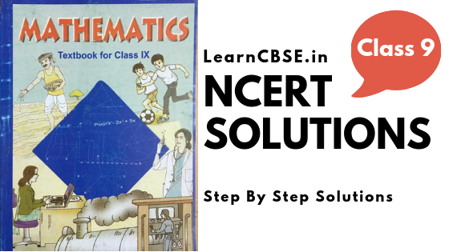

If you are searching for NCERT Solutions for Class 9 Maths, you have reached the correct place. LearnCBSE.in has created most accurate and detailed solutions for Class 9 Maths NCERT solutions. class 9 Maths NCERT Solutions includes all the questions provided as per new revised syllabus in Class 9 math NCERT textbook. You can download PDFs of NCERT book solutions for class 9 maths without LOGIN. You can also practice Extra Questions for Class 9 Maths on LearnCBSE.in
NCERT Solutions for Class 9 Maths
- Chapter 1 Number systems
- Chapter 2 Polynomials
- Chapter 3 Coordinate Geometry
- Chapter 4 Linear Equations in Two Variables
- Chapter 5 Introduction to Euclid Geometry
- Chapter 6 Lines and Angles
- Chapter 7 Triangles
- Chapter 8 Quadrilaterals
- Chapter 9 Areas of Parallelograms and Triangles
- Chapter 10 Circles
- Chapter 11 Constructions
- Chapter 12 Heron’s Formula
- Chapter 13 Surface Areas and Volumes
- Chapter 14 Statistics
- Chapter 15 Probability
- Class 9 Maths (Download PDF)
There are 15 chapters in class 9 maths. These chapters lay a foundation for the chapters that will come in class 10. This pdf is accessible to everyone and they can use this pdf based on their convenience. Here below we are helping you with the overview of each and every chapter appearing in the textbook.

NCERT Solutions for Class 9 Maths Chapter 1
- Class 9 Maths Number systems Exercise 1.1
- Class 9 Maths Number systems Exercise 1.2
- Class 9 Maths Number systems Exercise 1.3
- Class 9 Maths Number systems Exercise 1.4
- Class 9 Maths Number Systems Exercise 1.5
- Class 9 Maths Number Systems Exercise 1.6
- Number Systems Class 9 Extra Questions
NCERT Solutions for Class 9 Maths Chapter 2
- Class 9 Maths Polynomials Exercise 2.1
- Class 9 Maths Polynomials Exercise 2.2
- Class 9 Maths Polynomials Exercise 2.3
- Class 9 Maths Polynomials Exercise 2.4
- Class 9 Maths Polynomials Exercise 2.5
- Polynomials Class 9 Extra Questions
NCERT Solutions for Class 9 Maths Chapter 3
- Class 9 Maths Coordinate Geometry Exercise 3.1
- Class 9 Maths Coordinate Geometry Exercise 3.2
- Class 9 Maths Coordinate Geometry Exercise 3.3
- Coordinate Geometry Class 9 Extra Questions
NCERT Solutions for Class 9 Maths Chapter 4
- Class 9 Maths Linear Equations in Two Variables Exercise 4.1
- Class 9 Maths Linear Equations in Two Variables Exercise 4.2
- Class 9 Maths Linear Equations in Two Variables Exercise 4.3
- Class 9 Maths Linear Equations in Two Variables Exercise 4.4
- Linear Equations for Two Variables Class 9 Extra Questions
- Linear Equations in Two Variables Class 9 Word Problems and Important Questions
NCERT Solutions for Class 9 Maths Chapter 5
- Class 9 Maths Introduction to Euclid Geometry Exercise 5.1
- Chapter 5 Introduction to Euclid’s Geometry Ex 5.2
- Introduction to Euclid’s Geometry Class 9 Extra Questions
NCERT Solutions for Class 9 Maths Chapter 6
- Class 9 Maths Lines and Angles Exercise 6.1
- Class 9 Maths Lines and Angles Exercise 6.2
- Class 9 Maths Lines and Angles Exercise 6.3
- Lines and Angles Class 9 Extra Questions
NCERT Solutions for Class 9 Maths Chapter 7
- Class 9 Maths Triangles Exercise 7.1
- Class 9 Maths Triangles Exercise 7.2
- Class 9 Maths Triangles Exercise 7.3
- Class 9 Maths Triangles Exercise 7.4
- Chapter 7 Triangles Ex 7.5
- Triangles Class 9 Extra Questions
NCERT Solutions for Class 9 Maths Chapter 8
- Class 9 Maths Quadrilaterals Exercise 8.1
- Class 9 Maths Quadrilaterals Exercise 8.2
- Quadrilaterals Class 9 Extra Questions
- Quadrilaterals Class 9 Maths Important Questions
NCERT Solutions for Class 9 Maths Chapter 9
- Class 9 Maths Areas of Parallelograms and Triangles Exercise 9.1
- Class 9 Maths Areas of Parallelograms and Triangles Exercise 9.2
- Class 9 Maths Areas of Parallelograms and Triangles Exercise 9.3
- Chapter 9 Areas of Parallelograms and Triangles Ex 9.4
- Areas of Parallelograms and Triangles Class 9 Extra Questions
NCERT Solutions for Class 9 Maths Chapter 10
- Class 9 Maths Circles Exercise 10.1
- Class 9 Maths Circles Exercise 10.2
- Class 9 Maths Circles Exercise 10.3
- Class 9 Maths Circles Exercise 10.4
- Class 9 Maths Circles Exercise 10.5
- Chapter 10 Circles Ex 10.6
- Circles Class 9 Extra Questions
- Circles Class 9 Maths Important Questions with Answers
NCERT Solutions for Class 9 Maths Chapter 11
- Class 9 Maths Constructions Exercise 11.1
- Class 9 Maths Constructions Exercise 11.2
- Constructions Class 9 Extra Questions
- Class 9 Maths Constructions Important Questions
NCERT Solutions for Class 9 Maths Chapter 12
- Class 9 Maths Heron’s Formula Exercise 12.1
- Class 9 Maths Heron’s Formula Exercise 12.2
- Heron’s Formula Class 9 Extra Questions
- Class 9 Areas of Parallelograms and Triangles Worksheets with Solutions
NCERT Solutions for Class 9 Maths Chapter 13
- Class 9 Maths Surface Areas and Volumes Exercise 13.1
- Class 9 Maths Surface Areas and Volumes Exercise 13.2
- Class 9 Maths Surface Areas and Volumes Exercise 13.3
- Class 9 Maths Surface Areas and Volumes Exercise 13.4
- Class 9 Maths Surface Areas and Volumes Exercise 13.5
- Class 9 Maths Surface Areas and Volumes Exercise 13.6
- Class 9 Maths Surface Areas and Volumes Exercise 13.7
- Class 9 Maths Surface Areas and Volumes Exercise 13.8
- Chapter 13 Surface Areas and Volumes Ex 13.9
- Surface Areas and Volumes Class 9 Extra Questions
- Surface Areas and Volumes Word Problems and Important Questions
NCERT Solutions for Class 9 Maths Chapter 14
- Class 9 Maths Statistics Exercise 14.1
- Class 9 Maths Statistics Exercise 14.2
- Class 9 Maths Statistics Exercise 14.3
- Class 9 Maths Statistics Exercise 14.4
- Statistics Class 9 Extra Questions
- Maths Class 9 Statistics Important Questions with solutions
NCERT Solutions for Class 9 Maths Chapter 15
- Class 9 Maths Probability Exercise 15.1
- Probability Class 9 Extra Questions
- Class 9 Probability Important Questions
In this article, we will provide you all the necessary information regarding NCERT Solutions Maths Class 9. NCERT Solutions for Class 9 Maths is solved by expert teachers provide you a strong foundation in the subject Maths. The NCERT Solutions class 9 maths is solved keeping various parameters in mind such as stepwise marks, formulas, mark distribution, etc., This in turn, helps you not to lose even a single mark.
It is important to build a strong base in maths. This is one subject that will be useful for every student irrespective of their branch. And thus we are helping you with NCERT solutions for class 9 maths. This pdf can guide you to all the solutions given in the NCERT textbook along with the exercise.
Maths plays a major role in every student’s life. Working on NCERT Solutions for Class 9 Maths Notes will not only help you to score good marks in the grade 9 but also helps you to clear the toughest competitive exams like JEE, NEET, JEE Advanced etc., Further it is class 9 Maths NCERT Solutions will also be helpful to clear the exams like Olympiad, NTSE, through which you can easily avail scholarship and make your education journey hassle free. Read on to find out everything about NCERT Solutions Maths Class 9 to secure colorful marks in CBSE grade 9.
CBSE Class 9 Maths Unit Wise Weightage
| CBSE Class 9 Maths Unit-wise Weightage | ||
| UNIT NO | UNIT Name | Scoring Marks |
| UNIT I | Number Systems | 8 |
| UNIT II | Algebra | 17 |
| UNIT III | Coordinate Geometry | 4 |
| UNIT IV | Geometry | 28 |
| UNIT V | Mensuration | 13 |
| UNIT VI | Statistics & Probability | 10 |
| Total | 80 Marks | |
NCERT Solutions for Class 9 Maths PDF Download
Browse all Class 9 NCERT Solutions for maths from your mobile or desktop and gain more marks in your exams. You can also go through the Chapterwise Important Questions for Class 9 Maths which will help you in extra practice and exams. This consists of 1 mark Questions, 2 Mark Numericals Questions, 3 Marks Numerical Questions, 4 Marks Questions, Word Problems, and previous year questions (VSAQ, SAQ, LAQ, and Value-Based Questions) from all chapters in class 9 maths designed according to CBSE Class 9 Maths Syllabus are laid in a sequential manner will help in scoring more marks in your Board Examinations.
Class 9 Maths Chapter 1 Number Systems
This chapter is an extension of the number line you have studied in the previous standards. You will also get know how to place various types of numbers on the number line in this chapter. A total of 6 exercises in this chapter guides you through the representation of terminating or non terminating of the recurring decimals on the number line. Along with the rational numbers, you will also learn where to put the square roots of 2 and 3 on the number line. There are also laws of rational exponents and Integral powers taught in this chapter.
Class 9 Maths Chapter 2 Polynomials
This chapter guides you through algebraic expressions called polynomial and various terminologies related to it. There is plenty to learn in this chapter about the definition and examples of polynomials, coefficient, degrees, and terms in a polynomial. Different types of polynomials like quadratic polynomials, linear constant, cubic polynomials, factor theorems, factorization theorem are taught in this chapter.
Class 9 Maths Chapter 3 Coordinate Geometry
A total of 3 exercises in this chapter will help you understand coordinate geometry in detail. Along with there are concepts like concepts of a Cartesian plane, terms, and various terms associated with the coordinate plane are learned in this chapter. You will also learn about plotting a point in the XY plane and naming process of this point.
Class 9 Maths Chapter 4 Linear Equations in Two Variables
This chapter will introduce to a new equation, ax + by + c = 0 in two variables. The questions in this chapter will be related to proving that a linear number has infinite solutions, using ba graph to plot linear equation, and justifying any point on a line. A total of 4 exercises are there for your practice and understanding.
Class 9 Maths Chapter 5 Introduction to Euclid’s Geometry
The chapter begins with the introduction of Indian geometry as it has some base in Euclid’s geometry. The Introduction of Euclid’s geometry in this chapter helps you with a process of defining geometrical terms and shapes. There are a total of 2 exercises where you will dwell into the relationship between theorems, postulates, and axioms.
Class 9 Maths Chapter 6 Lines and Angles
This chapter in the NCERT textbook also has 2 exercises in it. There are various theorems on angles and lines in this chapter that can be asked in for proof. The first theorem which will be asked for proof is “If the two lines are intersecting each other, then the vertically opposite angles formed will be equal”. Also, the second proof that is asked is, “The sum of all the angles formed in a triangle is 180°”. There are other theorems also given, but these are based on only these two theorems.
Class 9 Maths Chapter 7 Triangles
The contents in this chapter will help in understanding the congruence of triangles along with the rules of congruence. This chapter also has two theorems in it and a total of 5 exercises for students to practice. These two theorems are given as proof while the other is used in the problems or applications. Besides this, there are many properties of inequalities and triangles in this chapter for students to learn.
Class 9 Maths Chapter 8 Quadrilaterals
This chapter is very interesting for students to learn and there are only 2 exercises in it. The questions in this chapter are related to the properties related to quadrilateral and their combinations with the triangles.
Class 9 Maths Chapter 9 Areas of Triangles and Parallelogram
This chapter is important to understand the meaning of the area with this, the areas of the triangle, parallelogram, and their combinations are asked in this chapter along with their proofs. There are also examples of the an which are used as a proof of theorems in this chapter.
Class 9 Maths Chapter 10 Circles
In this chapter, you will get to learn some interesting topics like equal chords and their distance from the center, the chord of a point and angle subtended by it, angles which are subtended by an arc of a circle, and cyclic quadrilaterals. There are also theorems in this chapter which are helpful to prove questions based on quadrilaterals, triangles, and circles.
Class 9 Maths Chapter 11 Constructions
This chapter will help you learn two different categories of construction. One of them is the construction of a triangle along with its base, difference or sum of the remaining two sides, and one base angle with base angle and parameters are given. The other is the construction of bisectors for the line segments and measuring angles that include 45/60/90, etc.
Class 9 Maths Chapter 12 Heron’s Formula
This chapter joins the long list NCERT chapters that also has 2 exercises in it. In this chapter, you will be learning the concepts that are an extension of concepts related to the area of a triangle. Furthermore, you will get to learn about finding the area of triangles, quadrilaterals, and various types of polygons. Along with the, is there is also knowledge of formula for the plane figures given in the chapter.
Class 9 Maths Chapter 13 Surface Areas and Volume
Every one of you has already studied mensuration in previous standards. Thus, you must be aware of surface areas and this chapter is on that. Along with this, this chapter also has a volume of cubes, cylinders, cuboids, cones, hemispheres, and spheres. Also, in this chapter, you will get to know about the conversion of one figure into another, and comparing volumes of two figures.
Class 9 Maths Chapter 14 Statistics
In this chapter, you will get the knowledge about the descriptive statistics and the collection of data based on different aspects of life. This is useful for interpretation and stating the inferences from the data. This chapter gives the basic knowledge of the collection of data as the data is available in raw form. As you move forward and study 5 exercises you will learn about presenting data in tabular form by keeping them together in regular intervals, polygon, histogram, or bar graph drawing. You will also get to the topics like mean, median, and mode and finding the central tendency with the raw data.
Class 9 Maths Chapter 15 Probability
Probability in this book is based on the observation approach or finding the frequency. Questions in this chapter are very intuitive as they are based on daily life or day to day situations. For example, incidents like throwing dice, coin tossing, the probability for a deck of cards and simple events. If you are curious this chapter can be very interesting for you to learn and understand.
There may be a few times where you feel you are stuck and not getting the desired solutions. This is where we can you with NCERT solutions for class 9 maths. You can use this article as a reference for all the chapters in the NCERT book.
FAQs on NCERT Solutions for Class 9 Maths
1. How do I study for the class 9 CBSE Maths?
Practice the NCERT Solutions for Class 9 Maths and try covering all the topics and questions carefully.
2. How could I learn Class 9 maths in an efficient and fast way?
The best way to learn fast is to solve NCERT. NCERT has few questions but has great importance in papers. If you can solve the whole NCERT with examples, you can easily score well. If you ample time try referring to RD Sharma too as it’s the best book.
3. Can I get solved math questions for the Class 9 CBSE?
Yes, you can get solved math questions for Class 9 CBSE Exams from our page. Access the direct links available on our page and download them for free of cost.
4. Which is the best maths guide for 9th CBSE?
NCERT Solutions for Class 9 Maths will help you aid your preparation. Get a good grip over the subject by practicing more and more NCERT Solutions prevailing on our page.
5. How can I download the NCERT Solution Book for the CBSE Class 9 Maths?
Aspirants can download the CBSE Class 9 Maths NCERT Solutions by tapping on the direct links available. Lay a stronger foundation of the concepts by referring to the NCERT Solutions.
6. How long should a student of Class 9 practice math?
It’s not about the time limit. Try practicing as much as you can and revise the complete syllabus of Class 9 Maths for the exams to score well.
Now that you are provided all the necessary information regarding NCERT Solutions for class 9 Maths and we hope this detailed article on class 9 Maths NCERT Solutions is helpful. If you have any doubt regarding this article or class 9 Maths NCERT Solutions, leave your comments in the comment section below and we will get back to you as soon as possible.